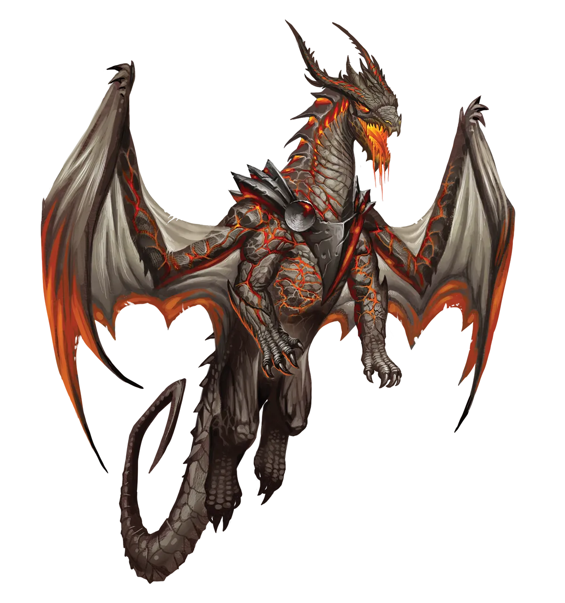
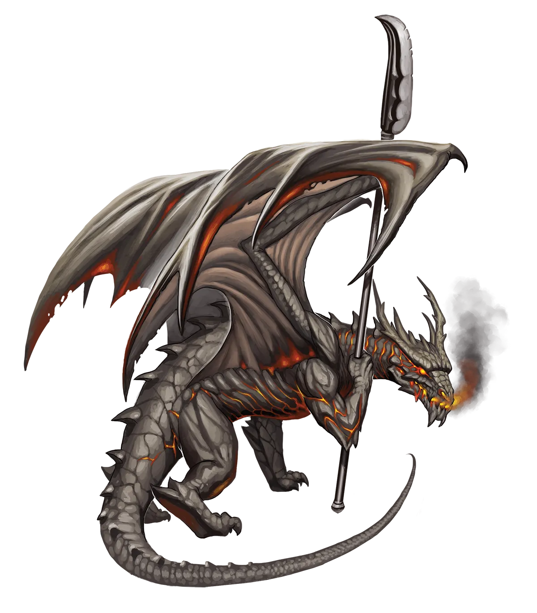

鲁莽的暴力
就我个人而言，我不推荐将熔岩龙作为相识，无论是永恒还是其他类型。不过，总有些方法可以减轻它们对财产毁灭、任性暴力以及整体鲁莽行为的倾向。这之所以重要，是因为否则永恒熔岩龙连同它们的冒险伙伴早就死了。密切留意它们眼中不安的神色，或手臂或翅膀的抽搐。这是它们即将做出可怕之事、导致你们全队丧命的征兆。一旦发现，就停止计划、争论或任何正在做的事情，尽快做出你能做的最佳决定。否则，熔岩龙很可能会为你做出最糟糕的决定。
岩浆龙 Magma Dragon |
|
|
熔岩龙不可预测且充满自信，几乎无法抑制的暴力随时可能因最细微的挑衅而爆发，它们渴望投身于任何纷争之中。永恒极光仪式是永恒熔岩龙可能会鲁莽冒犯的又一项风险，它们对此可能引发的危险视而不见。它们对战斗和挑战的热爱与仪式完成后测试和推动自身魔法的需求相得益彰。其他熔岩龙几乎从不因这一选择而责怪永恒熔岩龙，但这确实为一场战斗提供了借口，而且可能是一场有趣的战斗。在永恒熔岩龙刚完成仪式后立即攻击它们毫无意义，因为它们太过虚弱，构不成挑战。但一旦仪式的魔法让永恒熔岩龙恢复了力量，其他熔岩龙便开始对冲突和争斗产生兴趣，以彰显支配地位，或者只是为了发泄情绪。然而，无论如何，这几乎与熔岩龙平时相互对待的方式并无不同，这也是大多数熔岩龙独居生活的主要原因。 永恒熔岩龙渴望加入那些拥有大量挑战性战斗的团体，这正好对应了大多数冒险团队，但它们可能会给人留下不可预测的脱轨大炮的名声。在旁人看来，熔岩龙的行为有时显得随机，但熔岩龙总能为自己做出的决定给出理由；它们只是通常选择不这么做。然而，与它们信任的冒险伙伴在一起时，永恒熔岩龙可以学会解释事情以建立共识… 至少有时如此。其他时候，它们仍可能一时冲动行事，事后才解释并请求原谅。一些冒险伙伴可能会觉得熔岩龙的另一个倾向令人不快，那就是它们热衷于与盟友进行激烈的对练。一只愿意解释自己渴望与盟友交战的熔岩龙，能够巧妙地说出了解彼此长短处以及通过指点弥合防御空隙对彼此的价值。但事实的另一部分只是它们热爱战斗，而训练战斗能让熔岩龙将这股能量引导到有建设性的事情上。所有这些都意味着，尽管熔岩龙是强大且非常适合快节奏永恒生活的盟友，但它们依然非常难以应付，只有态度正确的冒险团队才能顺遂地接纳一名熔岩龙成员。特别是那些秩序井然或爱好和平、喜欢通过交谈解决问题并避免冲突的团队，尤其不适合容纳熔岩龙。熔岩龙热爱那些能让其狂躁能量转化为爆发性力量的职业，如野蛮人和术士。爆炸或致命打击越多越好！ 鲁莽的暴力 就我个人而言，我不推荐将熔岩龙作为相识，无论是永恒还是其他类型。不过，总有些方法可以减轻它们对财产毁灭、任性暴力以及整体鲁莽行为的倾向。这之所以重要，是因为否则永恒熔岩龙连同它们的冒险伙伴早就死了。密切留意它们眼中不安的神色，或手臂或翅膀的抽搐。这是它们即将做出可怕之事、导致你们全队丧命的征兆。一旦发现，就停止计划、争论或任何正在做的事情，尽快做出你能做的最佳决定。否则，熔岩龙很可能会为你做出最糟糕的决定。 岩浆龙特质 Magma Dragon Traits 你出身于一脉来自火元素位面、性情暴烈且难以捉摸的岩浆龙世系。 |
  |